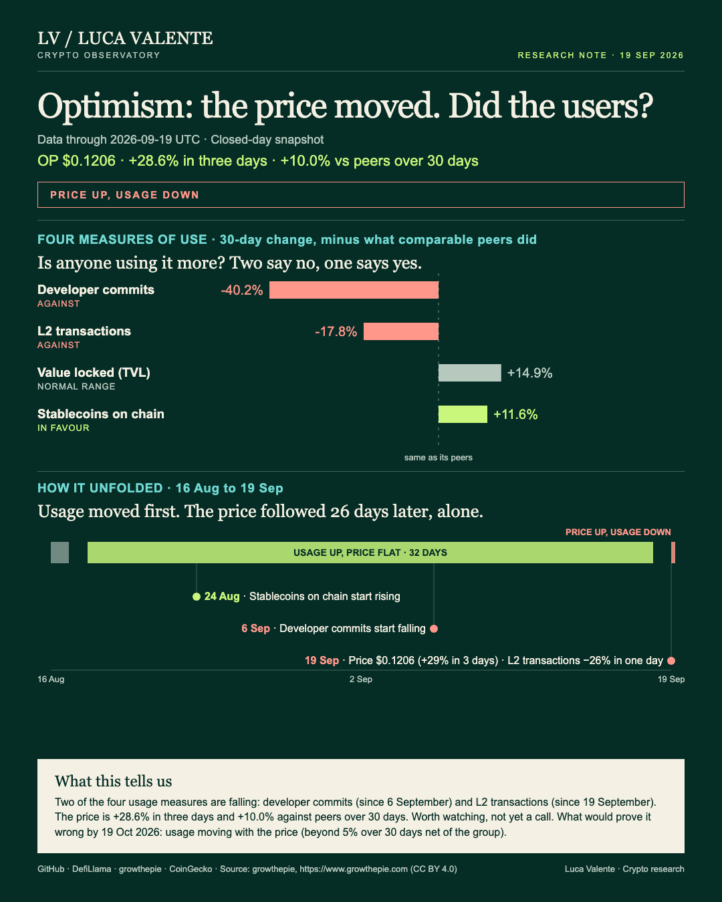
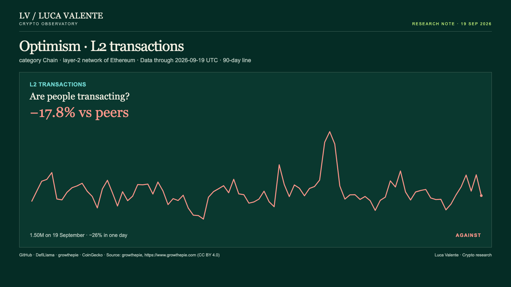
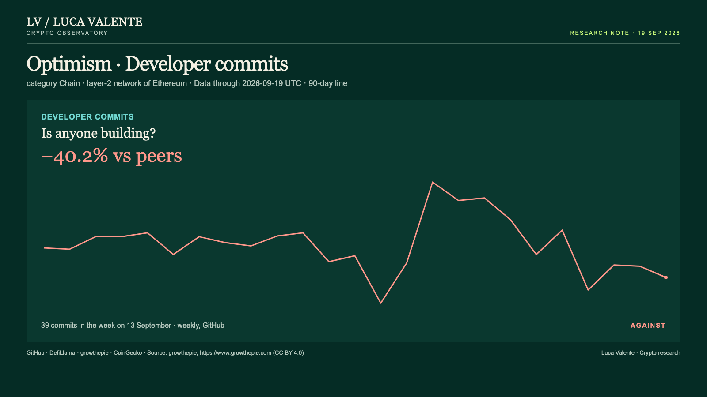

Optimism's Price Jumped. Its Transactions and Its Developers Didn't

On 19 September Optimism's price capped a 29% rise in three days while its transaction count fell sharply the same day.
That gap matters for anyone using OP's price as a signal of how much the network is actually being used.
OP closed at $0.1206 on 19 September, 29% higher than three days earlier and 10.0% ahead of its peer group of 37 chains over the past 30 days. Optimism is one of the networks that process Ethereum transactions more cheaply. In the six days before that it had moved in a narrow band, $0.09375 to $0.1023.
Stablecoins parked on Optimism are up 12.4% over 30 days, 11.6% ahead of peers, to $504 million, rising steadily since 24 August, twenty-six days before the price moved. That argues against the idea that people are pulling back. I do not have a clean way to weigh that against what follows.
L2 transactions, the transfers Optimism settles back to Ethereum, fell 26% in a single day, from about 2.0 million to 1.5 million, and are down 51.6% over 30 days, 17.8% worse than the peer group after adjusting for that. The daily count has stayed well under its 20 August peak of about 3.1 million.

Developer commits have been sliding since 6 September, down to 39 in the week of 13 September from 56 the week before, a 52.6% drop over 30 days and 40.2% worse than peers.

Two of the measures I look at now move against the price: transactions and development. A third, TVL, the money locked in Optimism's applications, is $465 million, up 28.5% over 30 days but only 14.9% ahead of peers, inside its normal range against the group. In the last 30 days, this combination, price up and usage down, showed up once: on 19 September.
I read this as a price that ran ahead of the usage, with one measure, stablecoins, arguing the other way.
If by 19 October most of the four usage measures are growing faster than their peers, this reading was wrong. If transactions and commits keep falling while the price holds, that gap gets harder to explain away.
Not a call: a note to come back to.
Source: growthepie, https://www.growthepie.com (CC BY 4.0)
Peer group: 37 chains tracked by DefiLlama and growthepie. 'Net of the group' is the 30-day change minus the group's median.
Not financial advice. This is a research note based on public on-chain data.
Corrected on 21 September: opening sentence and the condition that would change this reading.